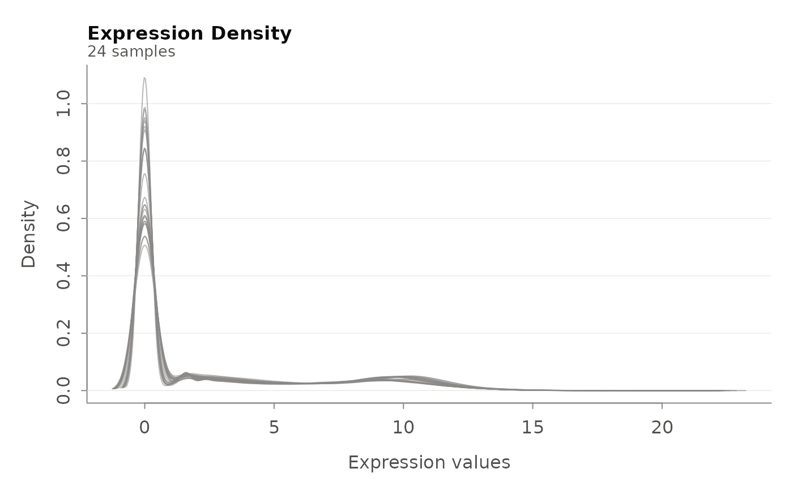

This function creates density plots for expression data in an ExpressionSet object. It can plot density curves for all samples, with optional log transformation and customizable styling options.
Usage
plot_eset_density(
eset,
title = "Density Plot",
log_transform = TRUE,
na_rm = TRUE,
width = 8,
height = 6,
error_message = "Error: No data available",
palette = NULL,
legend_position = "topright"
)Arguments
- eset
An ExpressionSet object containing expression data.
- title
Character string for the plot title. Default is "Density Plot".
- log_transform
Logical indicating whether to apply log2 transformation before plotting. Default is TRUE.
- na_rm
Logical indicating whether to remove NA values when computing densities. Default is TRUE.
- width
Numeric value for plot width in inches. Default is 8.
- height
Numeric value for plot height in inches. Default is 6.
- error_message
Character string to display if plotting fails. Default is "Error: No data available".
- palette
NULL(default) draws every sample in muted grey, the shape of the distributions being the point; ahcl.colorspalette name colours the samples and adds a legend when there are at most 20.- legend_position
Character string specifying legend position. Options include "topright", "topleft", "bottomright", "bottomleft", etc. Default is "topright".
Examples
# Load example data and create ExpressionSet
expr_data <- load_example_expression_data()
meta_data <- load_example_metadata()
eset <- make_ExpressionSet(expr_data, meta_data)
#> ✓ ExpressionSet created successfully
#> - Number of genes: 57010
#> - Number of samples: 24
 # Plot density curves
plot_eset_density(eset, title = "Expression Density", log_transform = TRUE)
# Plot density curves
plot_eset_density(eset, title = "Expression Density", log_transform = TRUE)
